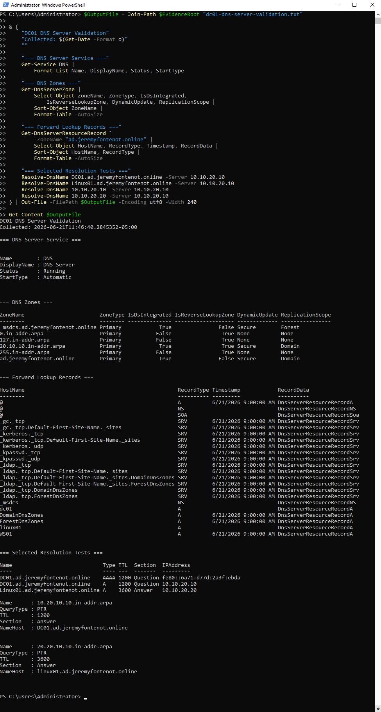

Windows Identity
AD DS, DNS, DHCP, Group Policy, FSMO roles, critical services, storage, and summarized health are supported by authenticated DC01 inventory.
Validated Home Lab / Current Operations Validation
A personal nonproduction lab supporting systems administration learning and technical review: Dell PowerEdge R710, Proxmox VE, pfSense, Windows Server 2022, Active Directory, DNS, DHCP, Group Policy, WS01, Linux01, OpenVPN management, logging, backups, and evidence governance.
Current Supported State
DC01 is a Windows Server 2022 domain controller at 10.10.20.10. WS01 is the Windows domain workstation at 10.10.20.100. Linux01 is an Ubuntu Server domain member at 10.10.30.20 on VLAN 30. Older Linux01 10.10.20.x evidence is historical.
AD DS, DNS, DHCP, Group Policy, FSMO roles, critical services, storage, and summarized health are supported by authenticated DC01 inventory.
VLAN 30, SSSD remediation, Kerberos, identity lookup, AD-authenticated SSH, UFW, sudo, rsyslog, and QEMU guest agent state are documented.
OpenVPN route evidence and selected positive and negative connectivity tests support the private management path.
Scheduled backup configuration and retained isolated startup checks are supported. Recurring restore assurance, RTO, and RPO are not claimed.
Relevant Screenshots
Full-resolution originals remain unchanged and open from each preview. Captions state only what the visible output supports.




Reviewer Artifacts
{kind=link}